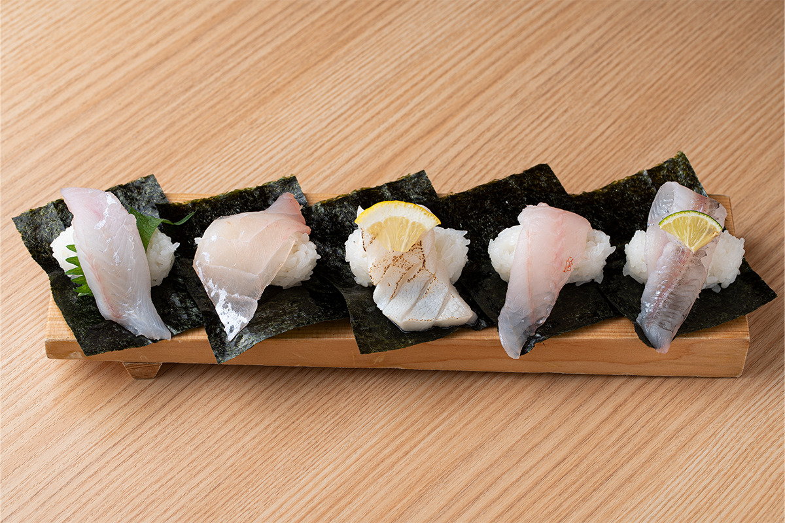
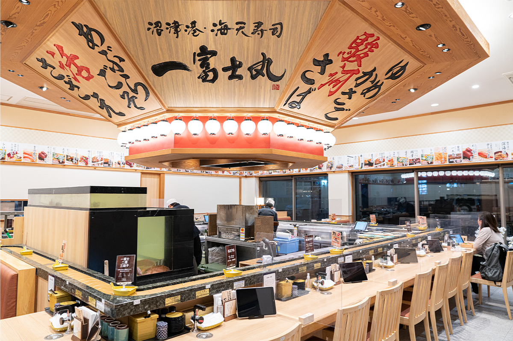
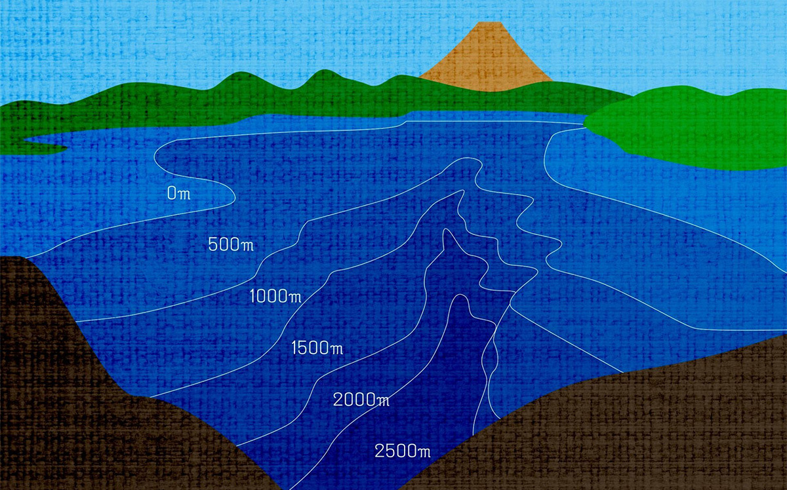
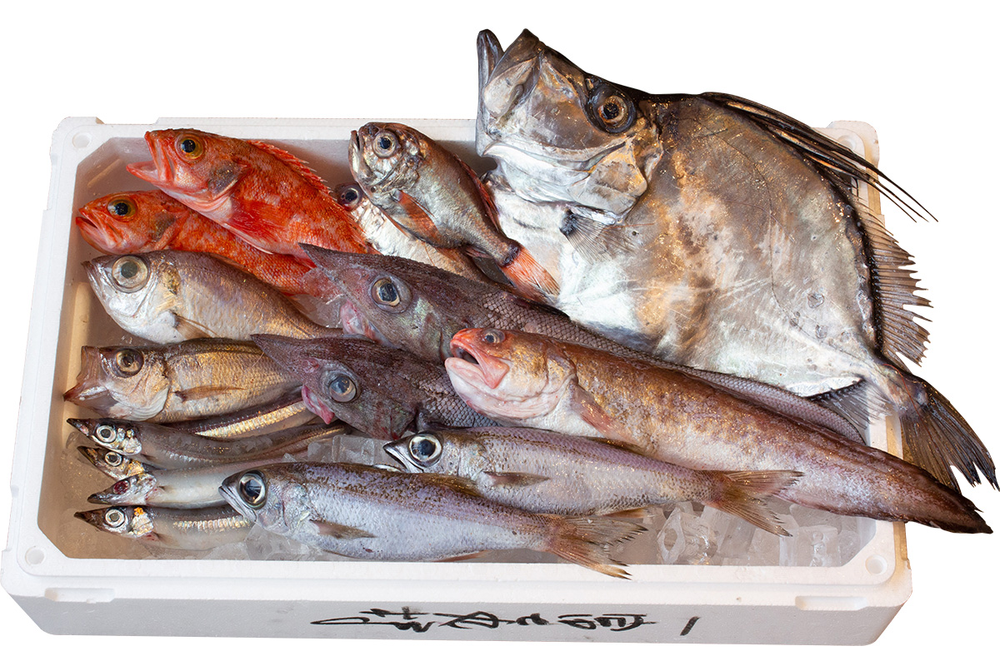
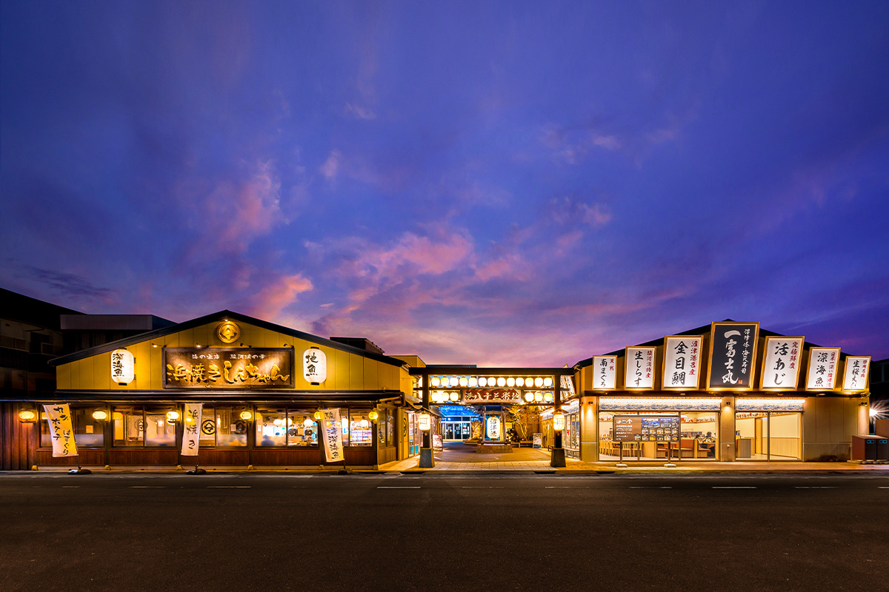
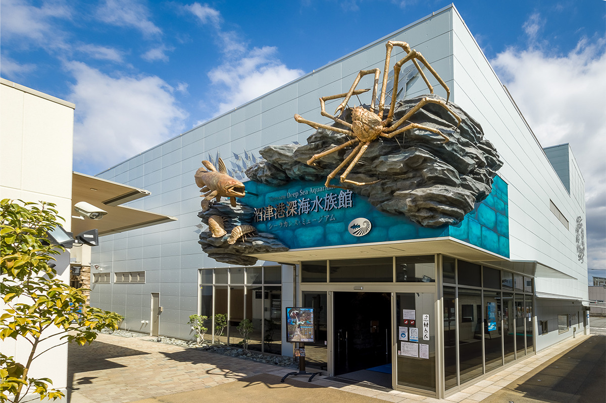

Префектура Сидзуока · Нумадзу · еда
Глубоководная рыба Нумадзу: суши из самого глубокого залива Японии

Многие ли знают, какова на вкус рыба с больших глубин? Портовый город Нумадзу стоит на берегу самого глубокого залива Японии, сюда привозят десятки видов глубоководной рыбы, и здесь можно попробовать редкие суши, которых почти нигде больше не делают.
Залив
Два с половиной километра под водой
Залив Суруга считается самым глубоким в Японии: в самой глубокой точке до дна 2500 метров. Траулеры из портов Нумадзу ловят здесь донным тралом самую разную глубоководную рыбу. А в порту Нумадзу работает Numazu Deep Sea Aquarium, единственный в мире океанариум, целиком посвящённый обитателям глубин.
В океанариуме объясняют, что глубоким морем считается всё, что ниже 200 метров. Солнечный свет туда почти не доходит, растения и фитопланктон без фотосинтеза жить не могут, и вся жизнь устроена иначе, чем у поверхности. Многое в этом мире до сих пор не изучено, но уже известно, что в заливе Суруга водятся самые разные древние рыбы, например плащеносная и большеротая акулы.
Суши
«Итифудзимару»: глубоководная рыба на конвейере

«Итифудзимару» стоит у самого порта Нумадзу. Хозяева решили подавать то, что можно попробовать только здесь, и сделали главным блюдом суши из глубоководной рыбы. Ресторан работал всего несколько месяцев, а к началу 2022 года сюда уже возвращались гости, которые ехали издалека ради этих суши.
«Чаще всего к нам приходят абурабодзу, мэдай и глубоководные красные креветки. В основном это белая рыба. Кинмэдай и куромуцу, которые все знают как дорогую рыбу, тоже живут на глубине. Жирную рыбу мы слегка обжигаем, а слишком водянистую выдерживаем в водорослях комбу. Для каждой рыбы мы ищем свой способ, чтобы она была вкуснее»
управляющий ресторана
Начать знакомство лучше всего с ассорти из пяти глубоководных суши: в 2022 году оно стоило 1180 иен. Набор рыбы зависит от того, что привезли в этот день, и иногда в него попадают кинмэдай, глубоководные красные креветки или куромуцу. Каждый раз это встреча с незнакомым вкусом. В один из дней в ассорти были вот такие рыбы:
- Абурагосо. Мягкое белое мясо, тающий жир с лёгкой сладостью и глубокий вкус.
- Онагадай. Её стандартное название хамадай. Тело у рыбы красное, поэтому и мясо красивого цвета, а вкус тонкий.
- Абурабодзу. Много лёгкого жира. Её обжигают, чтобы жир раскрыл аромат, и подают с лимоном.
- Юмэкасаго. Белое мясо с чистым вкусом, мягкое и чуть сладкое.
- Мэгису. Сырой её можно попробовать только там, где её ловят. Жирная, но без резкого привкуса, с мягким вкусом.
«Итифудзимару»
- Адрес
- префектура Сидзуока, Нумадзу, Сэмбон-минатомати, 83
- Телефон
- +81 55-939-8886
- Часы работы
- 11:00–21:00
- Выходные
- среда
Рыба
Кто живёт в заливе Суруга

Заливом Суруга называют воды к северу от линии между южной оконечностью полуострова Идзу и мысом Омаэдзаки. В залив впадают крупные реки, такие как Ои, и поэтому живности в нём особенно много. Траловый лов на глубине идёт с середины сентября до середины мая, а лучший сезон для глубоководной рыбы длится с сентября примерно до мая следующего года. Всего здесь насчитали больше 100 видов глубоководной рыбы.

Вот кого чаще всего привозят в порт Нумадзу:
- Юмэкасаго. Узнать её легко по красному телу. Её также называют нодогуро, но это другая рыба, не та нодогуро, что водится у берегов Японского моря.
- Гэхо. Стандартное название тодзин. У рыбы острая морда, вкусное белое мясо и очень хорошая печень.
- Абурагосо. Стандартное название хиутидай. Дорогая рыба, которую местные очень ценят за вкус.
- Кагамидай. Острый спинной плавник и блестящее, как зеркало, тело. Белое мясо с изысканным вкусом.
- Дэндэн. Так в Нумадзу называют сразу несколько видов белой рыбы: омэхата, нагаомэхата и вакияхата.
- Мэгису. Стандартное название нигису. Мясо мягкое, и обычно её вялят, но она хороша и сырой, и в панировке.
- Куромуцу. Известная дорогая рыба. Мясо чуть розоватое, жирное, с насыщенным вкусом.
- Хигэдара. Чем крупнее рыба, тем она дороже. Вкус у неё лёгкий, поэтому её часто выдерживают в водорослях комбу.
Порт
Что ещё есть в порту Нумадзу
Рыбу с глубины можно попробовать не только в «Итифудзимару»: в порту Нумадзу хватает мест, где её готовят. Здесь же можно и узнать о глубоководном мире больше. Попробовать незнакомую глубоководную рыбу, а потом увидеть её живьём в океанариуме можно, пожалуй, только в Нумадзу.

В «Минато хатидзюсан банти» собраны рестораны и сувенирные лавки, где подают и продают рыбу и морепродукты из залива Суруга. Кроме суши здесь есть и другая еда: после расширения в 2019 году появились итальянский ресторан, кафе и пекарня.
«Минато хатидзюсан банти»
- Адрес
- префектура Сидзуока, Нумадзу, Сэмбон-минатомати, 83
- Часы работы
- у каждого заведения свои
- Выходные
- у каждого заведения свои
- Сайт
- minato83.com

Numazu Deep Sea Aquarium, он же «Музей целаканта», показывает только обитателей глубин. Главное, что здесь есть, это замороженные образцы целаканта, древней кистепёрой рыбы, единственные в мире. Всего в океанариуме больше 100 видов глубоководных животных из залива Суруга и со всего света.
Numazu Deep Sea Aquarium
- Адрес
- префектура Сидзуока, Нумадзу, Сэмбон-минатомати, 83
- Телефон
- +81 55-954-0606
- Часы работы
- 10:00–18:00 (летом, зимой и в сезон наплыва гостей часы меняются)
- Выходные
- без выходных
- Цены / Вход
- взрослые (от старшей школы) 1600 иен, школьники 800 иен, дети от 4 лет 400 иен
Фото: Ацуси Ямахира.